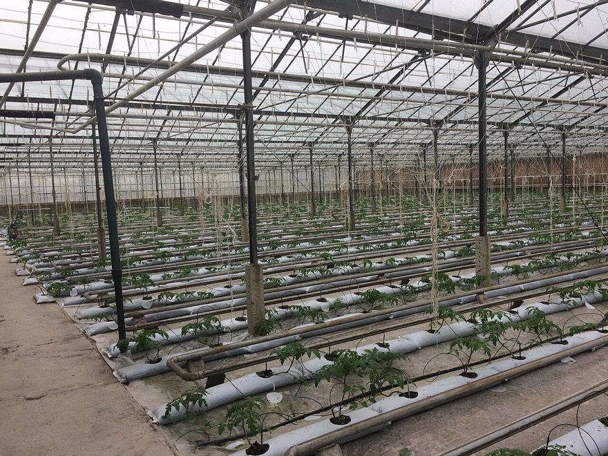
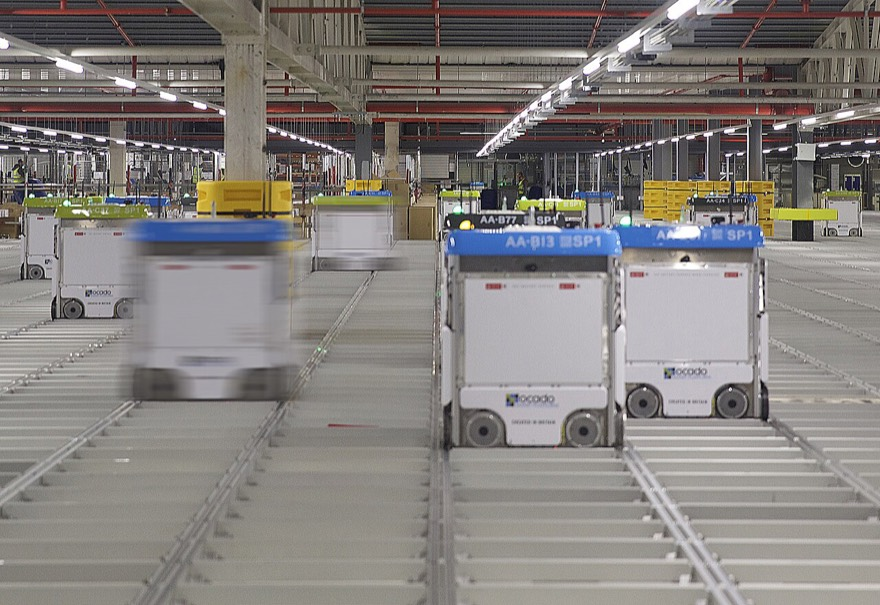
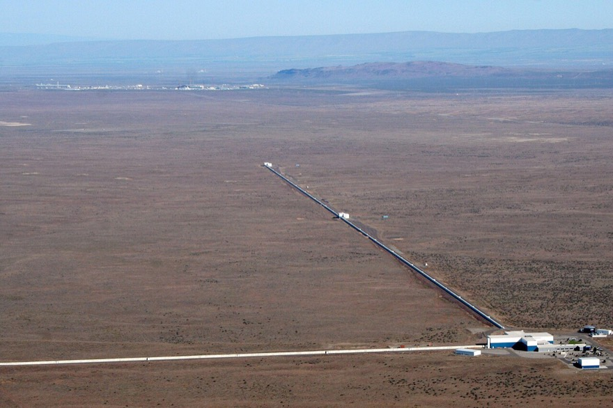
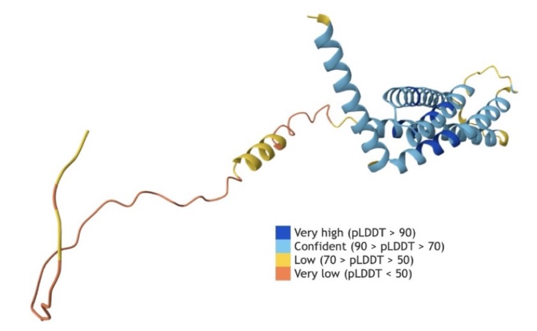
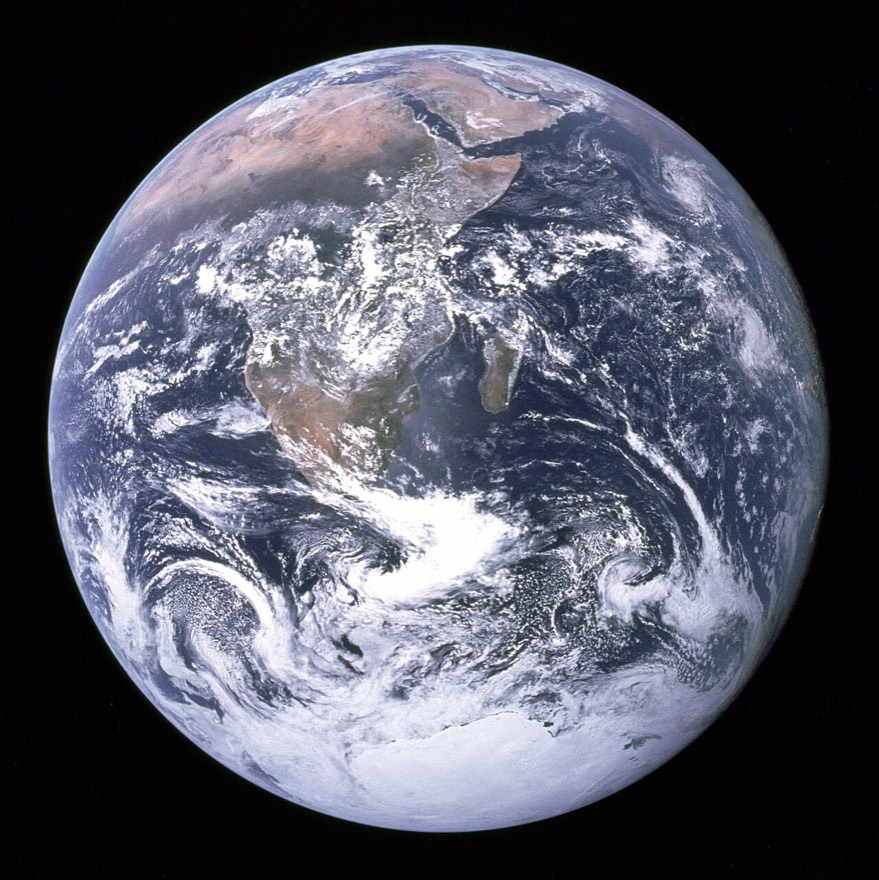
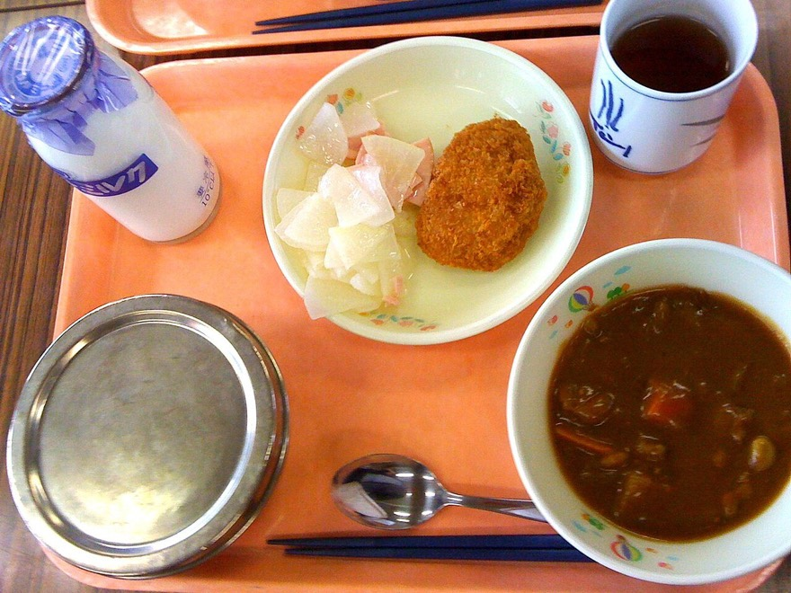
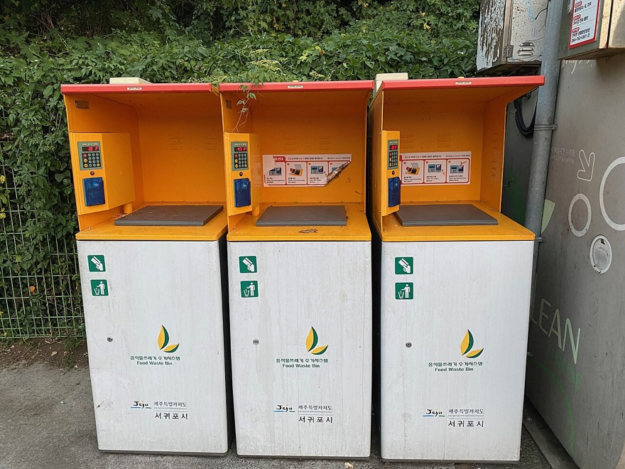

앞의 세 단원에서 배운 것을 모두 꺼내 써요. 급식 잔반, 탄소 발자국, 교실 자리 배치처럼 우리 곁의 문제를 직접 프로그램으로 해결해 보는 단원이에요.
1-1 정보과학과 문제 해결 14주차
정보과학은 컴퓨터로 코딩만 하는 과목이 아니에요. 세상의 문제를 찾아내고, 자료를 모아 따져 보고, 프로그램으로 해결하는 방법이에요.
오늘의 질문
정보과학은 여러 분야의 문제를 어떻게 해결할까?
정보과학으로 풀 수 있는 생활 속 문제를 찾아낼 수 있어요.
문제 해결 과정의 다섯 단계를 순서대로 말할 수 있어요.
문제를 초기 상태와 목표 상태로 나누어 정의할 수 있어요.
생활 속 이야기 · 산불
요즘 산불은 봄에만 나지 않고 일 년 내내 일어나요. 예전에는 산불이 나면 97~98%가 하루 안에 꺼졌지만, 요즘은 이틀 넘게 이어지는 경우가 늘었다고 해요.
산불이 나는 까닭을 조사해 보니 ① 산에 간 사람이 음식을 해 먹다 낸 불 ② 쓰레기 태우기 ③ 농사 부산물을 몰래 태우기 ④ 버린 담배 순서였어요.
산불을 줄이는 데 컴퓨터와 데이터가 도움이 될 수 있을까요?
어디에서, 언제, 왜 불이 났는지 기록한 데이터가 쌓이면 “어느 지역이 언제 위험한지”를 미리 알아낼 수 있어요.사진: Murphy Karen, U.S. Fish and Wildlife Service · 퍼블릭 도메인 · Wikimedia Commons
정보과학은 문제를 푸는 강력한 도구
정보과학은 데이터를 모으고(수집) → 따져 보고(분석) → 다루고(처리) → 써먹는(활용) 과정으로 실제 변화를 만들어 내요. 길이 막히는 문제는 교통 데이터를 실시간으로 모아 신호등을 알맞게 조절해서, 기후 문제는 날씨 데이터를 분석해 대응 전략을 세워서 풀 수 있어요.

스마트팜센서와 드론으로 흙의 물기, 영양 상태, 날씨를 실시간으로 살펴요. → 수확이 늘고, 물·비료를 아끼고, 병충해를 막고, 일손이 줄어요.사진: Narek75 · CC BY-SA 4.0 · Wikimedia Commons스마트 교통 시스템센서와 인공지능으로 교통량, 차량 속도, 사고 위험 지역을 살펴요. → 막히는 시간을 예측해 길을 나눠 주고 사고를 막아요.사진: 서울연구원 · CC BY 4.0 · Wikimedia Commons대기질 모니터링도시 곳곳의 센서로 공기 속 오염 물질을 재고, 오염 정도를 지도로 보여 주고 예측해요. → 시민 건강을 지키고 정책을 세워요.사진: Balise42 · CC BY 4.0 · Wikimedia Commons

스마트 물류인공지능이 주문량을 예측하고, 태그(RFID)로 물건의 위치를 실시간으로 따라가요. → 재고 관리가 쉬워지고 배송이 빨라져요.사진: Techwords · CC BY-SA 4.0 · Wikimedia Commons
문제 해결의 다섯 단계
쉽게 말하면 · 떡볶이 만들기
친구들에게 떡볶이를 만들어 주기로 했어요. ① 무엇이 문제인지 정하고 재료를 알아봐요(몇 명? 매운 걸 못 먹는 친구는?) ② 만드는 순서를 짜요(레시피) ③ 실제로 만들어요 ④ 맛을 보고 고쳐요(싱거우면 양념 더) ⑤ 친구들에게 내놓고, 반응을 듣고 다음에 더 맛있게 만들어요. 정보과학 프로젝트도 이 순서 그대로예요.
세 개의 프로젝트(급식 잔반 · 탄소 발자국 · 자리 배치)는 모두 이 순서를 그대로 따릅니다.
단계
하는 일
이 단계에서 묻는 질문
1. 문제 발견 및 구조화
풀고 싶은 문제를 또렷하게 정해요(문제 정의). 관련 데이터를 모으고, 큰 문제를 작은 문제로 나눠 각각 어떻게 풀지 정리해요.
지금 무엇이 문제이고(초기 상태), 어떻게 바뀌면 좋을까(목표 상태)? 어떤 데이터가 필요할까?
2. 알고리즘 설계
여러 방법의 좋은 점·나쁜 점을 견주어 가장 알맞은 알고리즘을 고르거나 새로 만들어요. 필요한 데이터와 함수를 설계해요.
어떤 순서로 풀까? 왜 이 방법이 좋을까?
3. 프로그램 작성
설계한 알고리즘을 프로그래밍 언어로 옮겨요. 읽기 쉽고 고치기 쉽게 쓰고, 모둠원과 협업해요.
누가 어느 부분을 만들까? 중간에 어떻게 확인할까?
4. 프로그램 검증 및 디버깅
여러 가지 테스트 케이스로 제대로 동작하는지 확인하고(검증), 오류의 원인을 찾아 고쳐요(디버깅).
이상한 값을 넣어도 괜찮을까? 왜 틀렸을까?
5. 배포 및 유지 보수
다른 사람이 쓸 수 있게 내놓고(배포), 의견을 들어 기능을 더하거나 고쳐 나가요(유지 보수).
사람들이 쓰면서 불편한 점은 없을까?
이 단원의 세 프로젝트 — 급식 잔반 최소화 · 탄소 발자국 계산 · 교실 자리 배치 — 는 모두 1~4단계를 그대로 따라가요. 오류를 찾으면 앞 단계로 돌아가 다시 고치는 것은 실패가 아니라 정상적인 과정이에요.
과학의 큰 문제도 정보과학으로
정보과학은 교실 밖 과학자들의 문제도 풀어요. 풀이 방식은 똑같아요. 문제를 작은 단계로 나누고(구조화), 단계마다 알맞은 알고리즘을 골라요.

물리학 · 중력파 찾기(LIGO)블랙홀이 부딪칠 때 생기는, 눈에 보이지 않는 아주 약한 떨림을 4km 길이의 장치로 잡아내요. 지진·바람 같은 잡음을 걸러 내는 것이 관건이에요.사진: LIGO Laboratory · 퍼블릭 도메인 · Wikimedia Commons

화학 · 단백질 모양 예측(AlphaFold)아미노산이 줄줄이 이어진 끈이 어떤 3차원 모양으로 접힐지를 인공지능이 예측해요. 색은 예측이 얼마나 믿을 만한지를 나타내요.사진: Liu02511 · CC0 · Wikimedia Commons

지구과학 · 기후 변화 시뮬레이션지구의 대기와 바다를 작은 칸으로 나눠 계산해서, 온실가스가 늘면 기온과 해수면이 어떻게 달라질지 미리 내다봐요.사진: NASA/Apollo 17 crew; taken by either Harrison Schmitt or Ron Evans · 퍼블릭 도메인 · Wikimedia Commons
분야 · 문제
문제 분석 및 구조화 (작은 단계로 나누기)
알고리즘 설계
생명과학 유전자 가위(CRISPR-Cas9)가 엉뚱한 곳을 자르지 않게 하려면?
목표가 아닌 비슷한 DNA를 실수로 고치는 ‘오프 타깃’ 위험이 있어요. DNA 서열 입력 → 표적 찾기 → 오프 타깃 예측 → 편집 성공률 평가
서열 비교 알고리즘으로 표적을 찾고, 딥러닝으로 오프 타깃 위험을 예측하고, 베이즈 최적화로 가장 알맞은 RNA를 만들어요.
화학 2만여 가지 단백질이 접히는 모양을 예측하려면?
서열이 길수록 예측이 어려워요. 서열 입력 → 기존 데이터 학습 → 접히는 길 시뮬레이션 → 에너지 최소화 → 3D 구조 생성
딥러닝으로 서열과 구조의 관계를 배우고, 몬테카를로 시뮬레이션으로 접히는 길을 따라가고, 에너지가 가장 낮은 안정된 모양을 찾아요.
지구과학 지구 온도에 따라 미래 기후가 어떻게 변할까?
기온·해수면·온실가스 농도의 변화를 예측해야 해요. 기후 데이터 입력 → 대기·해양 순환 모델 → 기후 변화 시나리오 생성
대기와 바다를 작은 부분으로 나눠 계산하고, 머신러닝으로 기후 데이터를 학습해 여러 시나리오를 그림으로 보여 줘요.
물리학 블랙홀이 충돌할 때 생기는 중력파를 찾으려면?
지진·바람·기기 진동 같은 잡음이 방해해요. 데이터 수집 → 잡음 제거 → 중력파 신호 찾기 → 블랙홀의 특성 추정
푸리에 변환으로 신호를 주파수로 바꾸고, 패턴 매칭으로 이론과 비교하고, 베이즈 추론으로 블랙홀의 질량과 속도를 계산해요.
어려운 말 쉽게
푸리에 변환
복잡한 신호를 단순한 파동들의 조합으로 쪼개는 방법. 여러 악기가 섞인 소리에서 악기별 소리를 가려내는 것과 비슷해요
베이즈 추론
새로운 정보를 얻을 때마다 원래 생각을 조금씩 고쳐 가는 방법. “구름이 꼈네? 비 올 가능성을 높여야겠다”
베이즈 최적화
이전 실험 결과를 바탕으로 다음에는 어디를 시도해야 가장 좋을지 예측하는 방법
몬테카를로 시뮬레이션
아주 많은 실험을 해 보고 그 결과로 전체 경향을 짐작하는 방법. 주사위를 만 번 던져 보고 확률을 아는 것과 같아요
구조화
여러 데이터나 문제를 체계 있게 정리해 다루기 쉽게 만드는 일
IoT 센서
인터넷에 연결되어 온도·습도 같은 값을 재서 보내 주는 작은 장치
역량 키우기 · 수행 활동
산불 발생을 줄이고 예방하는 방안을 정보과학으로 설계해 보자. 아래 예시를 참고해 모둠의 생각을 적어 보자.
단계
스스로에게 묻기
작성 예시
문제 정의
어떤 문제를 해결하고 싶나요? 해결하면 무엇이 달라지나요?
산불 발생 줄이기 — 초기 상태: 한 해 동안 175건의 산불이 발생했다 / 목표 상태: 산불 건수를 연간 100건 이하로 줄인다
문제 분석 및 구조화
어떤 데이터가 필요하고, 어떻게 모을 수 있나요?
원인은 입산자 실화와 불법 소각이며, 건조한 날씨와 강풍이 산불 확률을 높인다. 기상 데이터와 산불 발생 데이터를 분석해 고위험 지역과 시기를 찾아낸다
해결 방안 모색
고른 알고리즘이 문제를 어떻게 해결하나요?
탐욕 알고리즘으로, 불이 번질 가능성이 높은 지역부터 방화선(불이 못 넘어오게 막는 띠)을 만든다
해결 방안 검증
왜 이 방법을 골랐나요? 더 나은 방법은 없나요?
한정된 자원(사람·장비)을 효율적으로 나눠 쓸 수 있기 때문이다
다음 중 정보과학으로 해결하기 어려운 문제는? ① 여론을 분석해 정책 제안하기 ② 기후 데이터를 분석해 대응 전략 세우기 ③ 개인의 감정을 정확히 측정해 치료 방법 제시하기 ④ 고객 데이터를 분석해 마케팅 전략 개선하기
③. 사람의 감정은 수치 데이터로 정확히 재기 어려워요. 나머지는 데이터를 모아 분석할 수 있는 문제예요.
“프로그램의 실행 흐름을 따라가며 오류의 원인을 찾아 고친다”는 다섯 단계 중 어디에 해당할까요?
4단계 프로그램 검증 및 디버깅이에요. 문제 발견 및 구조화 단계에서는 데이터 수집·분석, 큰 문제를 작은 문제로 나누기, 해결 방안 아이디어 내기를 해요.
UN 지속가능발전목표(SDGs) — 지구와 인류가 오래도록 잘 살기 위해 UN이 정한 17가지 목표예요. 이 단원의 프로젝트는 그중 12. 책임 있는 소비와 생산(급식 잔반), 13. 기후 행동(탄소 발자국), 4. 양질의 교육(자리 배치)과 이어져요.
핵심 포인트
정보과학은 데이터의 수집 · 분석 · 처리 · 활용으로 여러 분야의 문제를 해결한다.
문제 해결 과정: 문제 발견 및 구조화 → 알고리즘 설계 → 프로그램 작성 → 검증 및 디버깅 → 배포 및 유지 보수.
문제 정의는 초기 상태와 목표 상태를 구체적인 수로 적는 것에서 시작한다.
큰 문제는 작은 단위로 나눠 구조화하면 체계적으로 접근할 수 있다.
1-2 프로젝트 ① 급식 잔반 최소화 14~15주차
점심시간마다 버려지는 음식을 줄일 수 있을까요? 데이터를 모으고, 잔반이 가장 적게 나오는 메뉴 조합을 찾아 주는 프로그램을 만들어요.
이 프로젝트에서 하는 일
급식 잔반을 줄이는 프로그램을 설계하려면 무엇을 고려해야 할까?
급식 잔반 문제를 데이터로 살펴보고 작은 문제로 나눠요.
딕셔너리에 메뉴 데이터를 담고, 동적 계획법으로 최소 잔반 조합을 찾아요.
프로그램이 올바른지 검증하고, 오류를 찾아 고쳐요.
생활 속 이야기 · 점심시간
“많이 주세요!” 점심시간이 되면 식판에 음식을 가득 담아요. 친구들과 이야기하며 맛있게 먹고 나면, 식판에는 다 먹지 못한 음식이 남아 있어요.
이 남은 음식은 어디로 갈까요? 그리고 어떤 일을 일으킬까요?

오늘의 급식식판에 담긴 음식 가운데 얼마가 버려질까요? (사진은 일본의 학교 급식)사진: Chris Harber from Fukuoka, Japan · CC BY-SA 2.0 · Wikimedia Commons

음식물 쓰레기 수거함남긴 음식은 수거되어 처리돼요. 이 과정에 돈이 들고 온실가스가 나와요. (제주도)사진: Sgroey · CC BY-SA 4.0 · Wikimedia Commons
한눈에 보기
내용
문제 정의
학교 급식 잔반량을 조사하고 줄일 방안을 찾는다
데이터 구조
딕셔너리 — 메뉴 이름을 키(key), 잔반량을 값(value)으로
알고리즘
동적 계획법 — 카테고리별 선택을 부분 문제로 나누고 중복 계산을 피함
이어지는 단원
Ⅲ-3-2 동적 계획법 · UN 지속가능발전목표 12. 책임 있는 소비와 생산
1단계 · 문제 발견 및 구조화
① 문제 발견. 음식물 쓰레기는 환경·경제·사회 모든 면에서 문제를 일으켜요.
환경 문제
지구를 덥힌다
쓰레기를 처리할 때 나오는 메탄가스는 이산화탄소보다 25배나 강한 온실가스예요.
경제 문제
돈이 많이 든다
음식물 쓰레기를 처리하는 데 매우 많은 비용이 들어요.
사회 문제
누군가는 굶는다
한쪽에서는 식량이 버려지는데, 다른 한편에서는 많은 사람이 굶주리고 있어요.
약 14,314톤하루에 나오는 음식물 쓰레기
8천억 원한 해 처리 비용
885만 톤한 해 온실가스 배출량
20조 원한 해 경제적 손실
출처: 환경부, 한국환경공단 (교과서 수록 자료)
② 데이터 수집. ‘급식 잔반’에 관한 데이터를 여러 방법으로 모아요.
면담 — 학교 영양 선생님께 잔반의 양과 원인을 여쭤봐요. 급식량은 알맞은지, 메뉴 선호도와 잔반량은 관계가 있는지 알아봐요.
인터넷 검색 — 음식물 쓰레기 처리 비용, 탄소 배출량 같은 전국 자료를 찾아 우리 학교와 비교해요.
설문 조사 — 학생들이 좋아하는 메뉴와 실제로 먹는 양을 조사해 잔반이 생기는 원인을 찾아요.
약 170g학생 1명이 한 끼에 남기는 양 (고등학생 연간 33kg ÷ 190일 ≈ 173g)
13~15만 원음식물 쓰레기 1톤 처리 비용
1.65kg CO₂잔반 1kg이 만드는 온실가스 (소나무 5그루가 흡수하는 양과 비슷)
선호도 ↑ 잔반 ↓좋아하는 음식이 나오면 잔반이 줄어듦
데이터를 모을 때 지킬 것 — ① 주제와 관련된 다양한 데이터를 충분히 모아요. ② 주제에 대한 배경 지식을 미리 공부해요. ③ 면담 전에 질문 목록을 준비해요. ④ 출처를 분명히 해서 믿을 수 있는 데이터를 모아요.
③ 분석과 해결 방안 구조화. 모은 데이터로 하루 평균 잔반량과 환경에 미치는 영향을 계산해 봐요. 그리고 음식물 쓰레기를 줄이는 길을 두 갈래로 정리해요.
해결 방안 ①
조리량 조정
메뉴별 평균 잔반량을 분석해 알맞은 조리량 계산
선호도를 조사해 인기 메뉴는 늘리고 비인기 메뉴는 줄이기
급식을 먹지 않는 학생 수를 미리 조사하기
해결 방안 ②
학생들의 인식 개선
잔반이 환경에 미치는 영향 교육하기
메뉴 계획에 학생이 참여하게 하기
먹겠다고 하고 먹지 않는 일에 책임 의식 갖게 하기
해결 방안을 쓸 때 — 현실에서 실제로 할 수 있는 방안을 마련하고, 여러 이해관계자(학생·영양 선생님·조리 종사원)의 의견을 반영하고, 효과를 미리 예측해 보완해요.
2단계 · 알고리즘 설계
프로그램이 풀 문제를 또렷하게 정해요. “고기·야채·국·반찬에서 메뉴를 하나씩 골라, 전체 잔반량이 가장 적은 조합을 찾는다.”
교과서의 예시 메뉴 데이터예요. 숫자는 그 메뉴가 나왔을 때 한 사람이 남기는 양(g)이에요. 우리 학교 상황에 맞게 카테고리와 메뉴를 바꿀 수 있어요.
직접 해 보기
식단 짜기 — 잔반이 가장 적은 조합 찾기
—이 식단의 잔반량
0시험한 식단
여기서는 줄마다 가장 적은 메뉴를 고르면 되지만, “같은 재료를 두 번 쓰지 않기” 같은 조건이 붙으면 그렇게 풀 수 없어요. 그래서 모든 경우를 빠짐없이, 그러나 겹치는 계산 없이 살피는 알고리즘이 필요해요.
def dp_minimize_waste(menu_data, categories):
category_keys = list(categories.keys()) # (1) ['고기', '야채', '국', '반찬']
n = len(category_keys) # 카테고리 개수 = 4
dp = {} # 동적 테이블(이미 계산한 결과 저장)
def get_min_waste(index, chosen): # index번째 카테고리부터 골라 나감
if index == n: # (2)-① 종료 조건: 모두 골랐으면
return 0, [] # 더할 잔반 0, 빈 조합
if (index, tuple(chosen)) in dp: # (2)-② 중복 확인: 계산한 적 있으면
return dp[(index, tuple(chosen))] # 저장된 값을 그대로
min_waste = float('inf') # (2)-③ 초기화: 최소 잔반은 무한대에서 시작
best_combination = []
current_category = category_keys[index] # (3) 이번 카테고리의 메뉴를 하나씩
for menu in categories[current_category]:
if menu not in chosen:
# 다음 카테고리로 넘어가 나머지의 최소 잔반을 구함 (재귀 호출)
waste, combination = get_min_waste(index + 1, chosen + [menu])
waste += menu_data[menu]['waste'] # 이번 메뉴의 잔반을 더함
if waste < min_waste: # 더 적으면 기록 갱신
min_waste = waste
best_combination = [menu] + combination
dp[(index, tuple(chosen))] = (min_waste, best_combination) # 결과 저장
return dp[(index, tuple(chosen))]
min_waste, best_combination = get_min_waste(0, []) # (4) 첫 카테고리부터 시작
return best_combination, min_waste
코드 읽는 법 — get_min_waste(index, chosen)는 “index번째 카테고리부터 끝까지 골랐을 때의 최소 잔반량과 그 조합”을 돌려줘요. 고기에서 하나를 고르고 → 나머지(야채·국·반찬)의 최소는 자기 자신을 다시 불러 구해요. float('inf')는 무한대예요. 처음에 아주 큰 값으로 두어야 어떤 값이 와도 “더 작다”로 갱신돼요. tuple(chosen)은 리스트를 딕셔너리의 키로 쓸 수 있게 튜플로 바꾼 거예요.
최소 잔반량 메뉴 조합: ['오리고기', '브로콜리', '된장국', '김치']
최소 잔반량: 70g
카테고리마다 메뉴 개수가 달라져도 안정적으로 답을 내요.
해 보기 · 프로그램 검증하기
우리 모둠의 프로그램을 아래 항목에 따라 점검해 보자.
프로그램이 급식 잔반을 줄이려는 목표와 요구 사항을 정확히 반영했는가?
메뉴 데이터와 카테고리 데이터가 정확하고, 이상한 값(음수 등)이 없는가?
재귀 호출이 정상적으로 동작하고 중복 계산이 없는가?
데이터가 많아져도 프로그램이 효율적으로 실행되는가?
최종 결과가 예상한 대로 출력되는가?
함께 해결하기 · 더 나아가기
버튼과 표가 있는 프로그램으로
교과서에서는 PyQt5라는 도구로 메뉴 목록 표, ‘최적 메뉴 조합 찾기’ 버튼, 결과 창이 있는 프로그램을 만들어 봐요. PyQt5는 파이썬으로 창·버튼·슬라이더 같은 화면(GUI)을 만들 수 있게 해 주는 도구예요.
PyQt5는 내 컴퓨터에 창을 띄우는 방식이라 코랩이나 이 사이트의 실행기에서는 돌아가지 않아요. 내 컴퓨터에 파이썬을 설치한 뒤 교과서의 예시 코드로 실행해 보세요. 알고리즘 부분은 위에서 만든 dp_minimize_waste()를 그대로 써요.
낱말 풀이
잔반
먹고 남은 음식
카테고리
비슷한 것끼리 묶은 갈래. 여기서는 고기·야채·국·반찬
키(key)와 값(value)
딕셔너리에서 이름표와 그 안에 든 내용
검증
프로그램이 올바르게 동작하는지 확인하는 일
디버깅
오류(버그)의 원인을 찾아 고치는 일
테스트 케이스
프로그램을 시험해 보려고 준비한 입력과 기대하는 결과
이해관계자
그 일과 관련이 있어 영향을 주고받는 사람들
2-1 프로젝트 ② 탄소 발자국 계산 15주차
집에서 학교, 도서관, 카페로 갈 때 이산화탄소가 가장 적게 나오는 길은 어디일까요? 지도를 그래프로 바꾸고, 다익스트라 알고리즘으로 찾아봐요.
이 프로젝트에서 하는 일
일상생활에서 이산화탄소 배출량을 줄이려면 어떻게 해야 할까?
탄소 발자국이 무엇인지 알고, 활동량 × 배출 계수로 계산해요.
장소와 길을 그래프로 나타내고 다익스트라 알고리즘으로 최소 배출 경로를 찾아요.
데이터와 프로그램을 검증하고 테스트 케이스로 확인해요.
생활 속 이야기 · 지구가 더워져요
전기를 쓰고, 차를 타고, 쓰레기를 버릴 때마다 눈에 보이지 않는 온실가스가 나와요. 온실가스는 지구를 이불처럼 덮어 점점 덥게 만들어요.
그래서 세계 여러 나라가 탄소 중립을 약속했어요. 탄소 중립은 “내보낸 만큼 다시 흡수해서, 실제로 늘어나는 양을 0으로 만들자”는 뜻이에요. 예를 들어 공장이 내보낸 이산화탄소만큼을 빨아들일 숲을 가꾸는 거예요.
그런데 나는 하루에 이산화탄소를 얼마나 내보내고 있을까요?
한눈에 보기
내용
문제 정의
일상 활동의 탄소 발자국을 계산하고 줄일 방법을 제안한다
기본 공식
탄소 발자국 = 활동량 × 배출 계수
데이터 구조
딕셔너리 · 우선순위 큐 · 그래프
알고리즘
다익스트라 알고리즘 — 한 곳에서 다른 모든 곳까지의 가장 ‘싼’ 길 찾기
이어지는 단원
Ⅱ-1-2 큐(우선순위 큐) · Ⅱ-2-2 그래프 · UN 지속가능발전목표 13. 기후 행동
1단계 · 문제 발견 및 구조화
탄소 발자국은 사람·기업·나라가 활동하거나 물건을 만들고 쓰는 과정에서 나오는 온실가스, 특히 이산화탄소의 전체 양이에요. 눈밭을 걸으면 발자국이 남듯이, 우리가 생활하면 탄소가 남는다는 뜻이에요. 발자국이 클수록 많이 내보낸 것이고, 줄이면 지구 온난화를 늦추는 데 도움이 돼요.
쉽게 말하면 · 활동량 × 배출 계수
과자 한 봉지가 500원이면 3봉지는 500 × 3 = 1,500원이에요. 탄소도 똑같이 계산해요. “버스 1km를 타면 0.1kg이 나온다”가 배출 계수(한 단위의 값)이고, “오늘 8km 탔다”가 활동량이에요. 그러면 8 × 0.1 = 0.8kg이에요.
활동 (단위)
배출 계수 (kg CO₂)
예
전기 사용 (1kWh)
0.474
10kWh 쓰면 4.74kg
버스 이용 (1km)
0.1
8km 타면 0.8kg
LPG 사용 (1L)
1.5
2L 쓰면 3kg
플라스틱 사용 (1kg)
2.5
0.2kg 쓰면 0.5kg
쌀 섭취 (1kg)
2.7
0.3kg 먹으면 0.81kg
소고기 섭취 (1kg)
27
0.2kg 먹으면 5.4kg
채소 섭취 (1kg)
0.5
0.2kg 먹으면 0.1kg
참고: 온실가스종합정보센터, 에너지관리공단, 국가 온실가스 배출·흡수계수 (교과서 수록 예시). 배출 계수는 기준 단위·산정 시기·기관에 따라 다르므로 실제 프로젝트에서는 최신 공식 자료를 확인하세요.
배출 계수로 나의 하루 탄소 발자국 계산하기 — 값을 입력해 실행해 보기
factors = {'전기(kWh)': 0.474, '버스(km)': 0.1, '소고기(kg)': 27, '채소(kg)': 0.5} # 배출 계수
total = 0
for activity, factor in factors.items():
amount = float(input(f'{activity} 사용량: ')) # 활동량 입력
co2 = amount * factor # 활동량 × 배출 계수
total += co2
print(f'{activity}: {amount} × {factor} = {co2:.2f}kg CO2')
print(f'오늘의 탄소 발자국: {total:.2f}kg CO2')
직접 해 보기
나의 하루 탄소 발자국 — 슬라이더로 계산하기
0오늘의 탄소 발자국 (활동량 × 배출 계수의 합)
배출 계수는 위 표의 교과서 예시 값이에요. 소고기를 100g만 줄여도 다른 항목과 견주어 얼마나 달라지는지 살펴보세요.
수집할 데이터와 분석할 내용을 정리해요.
모을 데이터
어디서 탄소가 나올까
교통수단 — 무엇을 타고, 몇 km를 가는지
집 안 에너지 — 전기·가스·물 사용량
먹는 것 — 음식 종류, 수입 여부
물건 — 사용 기간, 버릴 때 나오는 양
분석할 내용
무엇을 알아낼까
활동마다 탄소 배출에 미치는 영향 비교
내 활동의 탄소 배출량 계산
하루 배출량을 계산하고 줄일 목표 정하기 (자전거 등교, 샤워 10분 안에 끝내기 등)
해결 전략
어떻게 줄일까
대안 행동 — 자동차 대신 자전거·대중교통
시각화 — 줄인 양을 그래프로 보여 주기
사회적 활동 — 학교·지역의 탄소 중립 챌린지와 연결
해 보기 · 생활 속 탄소 발자국 조사
일회용 컵 1개를 쓰면 약 11g의 탄소 발자국이 생겨요. 아래 활동의 탄소 발자국은 얼마일지 검색해 표를 채워 보자. 출처도 함께 적어요.
노트북 4시간 사용 · 샤워 15분 · 텔레비전 2시간 시청 · 헤어드라이어 5분 사용 · 냉장고 24시간 사용 · 세탁기 1시간 사용 · 교실 형광등 10시간 사용
2단계 · 알고리즘 설계
이번에는 문제를 하나로 좁혀요. “집에서 출발해 각 장소까지 갈 때, 탄소가 가장 적게 나오는 길을 찾는다.”
장소를 동그라미(노드)로, 길을 선(간선)으로 그리고, 선 위에 그 길을 갈 때 나오는 탄소량(g)을 적어요. 이것이 Ⅱ단원에서 배운 가중치 그래프예요.
교과서의 예시 데이터예요. 굵은 선이 집에서 각 장소까지 탄소가 가장 적게 나오는 길이에요. 집에서 카페로 바로 가면 600g이지만, 학교 → 도서관을 거치면 300 + 68 + 68 = 436g으로 줄어요. 참고로 걷기·자전거는 0g, 버스는 1km에 약 68g, 자동차는 약 150g이에요.
쉽게 말하면 · 다익스트라 알고리즘
처음에는 집 말고는 어디든 “얼마나 드는지 모름(무한대)”이라고 적어 둬요. 그리고 지금까지 알아낸 곳 중 가장 적게 드는 곳으로 먼저 가서, 그곳에서 이어진 이웃들의 값을 “여기를 거쳐 가면 더 적게 드나?” 하고 고쳐 적어요. 더 고칠 곳이 없을 때까지 되풀이하면 모든 장소의 최솟값이 정해져요.
우선순위 큐는 줄을 선 순서가 아니라 값이 가장 작은 것이 먼저 나오는 줄이에요. 그래서 “가장 적게 드는 곳”을 매번 빠르게 꺼낼 수 있어요.
집에서 출발해 한 단계씩 따라가 봐요. 고쳐 적은 값은 굵게 표시했어요.
단계
지금 있는 곳
집
학교
도서관
카페
학원
무슨 일이 있었나
처음
—
0
∞
∞
∞
∞
집만 0, 나머지는 모름
1
집 (0)
0
300
450
600
∞
집과 이어진 세 곳을 적음
2
학교 (300)
0
300
368
600
450
학교를 거치면 도서관 300+68=368 (450보다 적음)
3
도서관 (368)
0
300
368
436
450
도서관을 거치면 카페 368+68=436 (600보다 적음)
4
카페 (436)
0
300
368
436
450
더 줄일 곳 없음
5
학원 (450)
0
300
368
436
450
더 줄일 곳 없음 → 끝
직접 해 보기
다익스트라 — 한 단계씩 확정해 보기
동그라미 안의 숫자가 지금까지 알아낸 최소 배출량(g)이에요. 테두리가 굵은 장소는 값이 확정된 곳, 굵은 선은 그곳까지 가는 가장 좋은 길이에요.
'집': {'학교': 300, ...}은 “집에서 학교로 가면 300g이 나온다”는 뜻이에요. 딕셔너리 안에 딕셔너리가 들어 있는 모양이에요.
② 알고리즘 구현 — 다익스트라
def dijkstra(graph, start):
co2 = {node: float('inf') for node in graph} # (1) 모든 장소를 '모름(무한대)'으로
co2[start] = 0 # 출발점은 0
priority_queue = [(0, start)] # (배출량, 장소)를 큐에 넣음
while priority_queue: # (2) 큐가 빌 때까지 반복
current_co2, current_node = heapq.heappop(priority_queue) # 가장 적은 곳을 꺼냄
if current_co2 > co2[current_node]: # 이미 더 적은 값을 알고 있으면
continue # 건너뜀 (불필요한 계산 줄이기)
for neighbor, co2_amount in graph[current_node].items(): # (3) 이웃을 하나씩
new_co2 = current_co2 + co2_amount # 여기를 거쳐 가는 배출량
if new_co2 < co2[neighbor]: # 더 적으면 고쳐 적고
co2[neighbor] = new_co2
heapq.heappush(priority_queue, (new_co2, neighbor)) # 큐에 넣음
return co2 # 각 장소까지의 최소 배출량
코드 읽는 법 — heapq.heappush(큐, 값)은 큐에 넣기, heapq.heappop(큐)는 가장 작은 값 꺼내기예요. 튜플 (배출량, 장소)는 앞의 값(배출량)으로 크기를 비교해요. continue는 “이번 차례는 건너뛰고 다음 반복으로”라는 뜻이에요. 이 한 줄이 Ⅲ단원에서 배운 탐색 공간 배제예요.
전체 프로그램 — 단계별 진행 상황도 함께 출력
import heapq
carbon_network = {
'집': {'학교': 300, '도서관': 450, '카페': 600},
'학원': {'학교': 150, '카페': 600},
'학교': {'집': 300, '도서관': 68, '학원': 150},
'도서관': {'학교': 68, '카페': 68, '집': 450},
'카페': {'집': 600, '도서관': 68, '학원': 600}
}
def dijkstra(graph, start, show=True):
co2 = {node: float('inf') for node in graph}
co2[start] = 0
priority_queue = [(0, start)]
step_count = 1
while priority_queue:
current_co2, current_node = heapq.heappop(priority_queue)
if current_co2 > co2[current_node]:
continue
for neighbor, co2_amount in graph[current_node].items():
new_co2 = current_co2 + co2_amount
if new_co2 < co2[neighbor]:
co2[neighbor] = new_co2
heapq.heappush(priority_queue, (new_co2, neighbor))
if show: # 반복 과정을 확인하기 위한 출력
print(f"단계 {step_count}: 현재 장소 {current_node} (배출량 {current_co2})")
print(f" - 탄소 배출량 상태: {co2}")
print(f" - 우선순위 큐 상태: {priority_queue}")
step_count += 1
return co2
def main():
start_place = '집'
all_co2 = dijkstra(carbon_network, start_place)
print()
print(f"{start_place}에서 각 목적지까지의 최소 탄소 배출량:")
for destination, co2_amount in all_co2.items():
print(f" - {destination}: {co2_amount}g CO2")
main()
집에서 각 목적지까지의 최소 탄소 배출량:
- 집: 0g CO2
- 학원: 450g CO2
- 학교: 300g CO2
- 도서관: 368g CO2
- 카페: 436g CO2
지식 키우기 · 우선순위 큐와 힙
가장 작은 값이 늘 맨 위에
우선순위 큐는 보통 힙(heap)이라는 트리로 만들어요. 최소 힙은 “부모가 자식보다 작다”는 규칙을 지키는 트리여서, 가장 작은 값이 언제나 뿌리(root)에 있어요. (최대 힙은 반대로 가장 큰 값이 뿌리에 있어요.)
넣을 때 — 맨 끝자리에 넣고, 부모보다 작으면 자리를 바꾸며 위로 올라가요.
꺼낼 때 — 뿌리를 꺼내고, 맨 끝 값을 뿌리에 올린 뒤, 규칙이 맞을 때까지 아래로 자리를 바꿔요.
우선순위 큐가 없다면 매번 모든 장소를 훑어 가장 작은 값을 찾아야 해요. 힙을 쓰면 뿌리만 보면 되니 훨씬 빨라요. 이 프로젝트는 최소 배출량을 찾으므로 최소 힙을 써요.
해 보기 · 우리 동네 지도로 바꾸기
학교를 기준으로 주변 장소(편의점, 공원, 버스 정류장 등)를 정하고 실제 이동 거리를 조사해 보자.
교통수단별 배출량(버스 1km 약 68g, 자동차 1km 약 150g, 걷기·자전거 0g)으로 길마다 탄소 배출량을 계산해 보자.
위 프로그램의 carbon_network를 우리 동네 데이터로 고쳐 실행해 보자. 한 길을 자전거로 바꾸면(0g) 결과가 어떻게 달라질까?
4단계 · 프로그램 검증 및 디버깅
검증 ① 문제
무엇을 풀려는지 분명한가
문제 정의가 또렷한가
출발점에서 목적지까지 최소 배출 경로를 찾고 있는가
검증 ② 데이터
재료가 올바른가
모든 배출량이 양수인가 (음수가 있으면 다익스트라가 틀린 답을 내거나 끝나지 않을 수 있어요)
집 → 학교가 있으면 학교 → 집도 같은 값으로 있는가
검증 ③ 프로그램
답이 맞고 효율적인가
손으로 구한 답과 결과가 같은가
continue 조건이 이미 끝난 장소를 건너뛰는가
디버깅 ① 오류 메시지 읽기.while 줄을 함수 안쪽으로 들여 쓰지 않으면 이런 오류가 나요.
def dijkstra(graph, start):
co2 = {node: float('inf') for node in graph}
co2[start] = 0
priority_queue = [(0, start)]
while priority_queue: ← 들여쓰기가 빠짐
current_co2, current_node = heapq.heappop(priority_queue)
IndentationError: unexpected indent
파이썬은 들여쓰기로 “어디까지가 한 묶음인지”를 알아봐요. 함수·조건문·반복문 안의 코드는 한 단계 더 들여 써야 해요. 오류가 난 줄과 그 위아래 줄의 들여쓰기를 살펴보세요.
디버깅 ② 테스트 케이스. 여러 상황을 일부러 만들어 넣어 봐요. (위의 전체 프로그램을 먼저 실행한 다음 실행하세요.)
데이터 입력 및 초기화 — 교실 데이터와 학생 데이터를 받아 다루기 쉬운 모양으로 바꿔요.
고정 자리 배정 — 고정 자리가 필요한 학생을 먼저 앉혀요.
선호도 반영 자리 배정 — 앞·뒤 선호를 되도록 많이 들어주되, 이전 자리는 피해요.
무작위 자리 배정 — 남은 학생을 빈자리에 섞어 앉혀요. 역시 이전 자리는 피해요.
저장 및 출력 — 결과를 화면에 보여 주고 파일로 저장해 다음에 써요.
2단계 · 알고리즘 설계
쉽게 말하면 · 백트래킹
미로에서 길을 가다 막다른 곳이 나오면 마지막 갈림길로 되돌아가 다른 길로 가지요. 백트래킹도 같아요. 첫 번째 학생을 한 자리에 앉혀 보고, 다음 학생을 앉혀 보고… 누군가 앉을 자리가 없으면 바로 앞 학생의 자리를 비우고 다른 자리에 앉혀 다시 시도해요.
“이 자리는 이전 자리라서 안 돼”처럼 조건에 어긋나는 경우를 미리 걸러 내는 것이 가지치기예요. Ⅲ단원 4퀸 문제에서 쓴 방법과 똑같아요.
설계 항목
내용
1. 데이터 설정
교실 데이터 — 행과 열의 2차원 격자 / 학생 데이터 — 이름과 요구 사항
2. 알고리즘 선택
전체 탐색의 백트래킹 기법. 자리가 많아질수록 따져 볼 경우가 매우 빠르게 늘어나므로 가지치기가 중요해요.
3. 프로그래밍 순서
데이터 준비(클래스 정의, 객체 생성) → 알고리즘 구현(고정 자리 → 선호도 반영 → 무작위) → 결과 업데이트 및 저장
3단계 · 프로그램 작성
이 프로젝트에서는 부품을 하나 만들 때마다 바로 시험해 보며(단위 테스트) 프로그램을 완성해요.
① Student 클래스 — 학생 한 명의 정보를 담는 틀
class Student:
def __init__(self, name, fixed_seat=None, preferred_seat=None, prev_seat=None):
self.name = name # 학생 이름
self.fixed_seat = fixed_seat # 고정 자리
self.preferred_seat = preferred_seat or {'front': 0, 'back': 0} # 선호(앞, 뒤)
self.prev_seat = prev_seat # 이전 자리
왜 기본값이 None일까? — preferred_seat={'front': 0, 'back': 0}처럼 딕셔너리를 기본값으로 직접 쓰면, 그 딕셔너리 하나를 모든 학생이 함께 쓰게 되어 한 학생의 값을 바꾸면 다른 학생도 바뀌어요. 그래서 기본값은 None으로 두고, 안에서 preferred_seat or {...}로 학생마다 새 딕셔너리를 만들어 줘요.
② Classroom 클래스 — 교실을 2차원 리스트로
class Classroom:
def __init__(self, rows, cols, allow_prev_seat):
self.rows = rows # 행의 수
self.cols = cols # 열의 수
self.seats = [[None for _ in range(cols)] for _ in range(rows)] # 모두 빈자리(None)
self.allow_prev_seat = allow_prev_seat # 이전 자리에 앉아도 되는가
def assign_seat(self, row, col, student): # (행, 열)에 학생을 앉히는 메소드
self.seats[row][col] = student
Classroom(4, 4, False)는 “4행 4열, 이전 자리에는 못 앉음”인 교실을 만들어요. 처음에는 모든 칸이 None(빈자리)이에요.
③ 고정 자리 배정
def assign_fixed_seats(classroom, students):
remaining_students = [] # 고정 자리가 없는 학생을 모을 리스트
for student in students:
if student.fixed_seat: # 고정 자리가 있으면
row, col = student.fixed_seat
if classroom.seats[row][col] is None: # 그 자리가 비어 있을 때만 앉힘
classroom.assign_seat(row, col, student)
else:
print(f'{student.name} 고정 자리 충돌: ({row}, {col}) 자리가 이미 배정됨.')
else:
remaining_students.append(student)
return remaining_students
고정 자리를 가장 먼저 배정하는 까닭은, 나중에 하면 다른 학생이 이미 그 자리에 앉아 충돌이 생길 수 있기 때문이에요.
④ 백트래킹으로 자리 배정 — 이 프로젝트의 핵심
def is_safe(classroom, student, row, col): # 이 자리에 앉혀도 되는가? (가지치기)
if not classroom.allow_prev_seat: # 이전 자리 금지일 때
if student.prev_seat and student.prev_seat == (row, col):
return False # 이전 자리이면 안 됨
return True
def assign_seats_backtracking(classroom, students, positions):
def assign(index):
if index >= len(students): # 모든 학생을 앉혔으면 성공
return True
student = students[index] # 이번에 앉힐 학생
for row, col in positions: # 가능한 자리를 하나씩 시도
if classroom.seats[row][col] is None and is_safe(classroom, student, row, col):
classroom.assign_seat(row, col, student) # 일단 앉혀 봄
if assign(index + 1): # 다음 학생으로 (재귀 호출)
return True
classroom.assign_seat(row, col, None) # 막히면 자리를 비우고 되돌아감
return False # 이 학생을 앉힐 자리가 없음
return assign(0) # 0번 학생부터 시작
코드 읽는 법 — assign(index)는 “index번째 학생부터 끝까지 모두 앉힐 수 있으면 True”를 돌려줘요. 한 학생을 앉힌 뒤 assign(index + 1)이 False로 돌아오면, 방금 앉힌 자리를 None으로 되돌리고 다음 자리를 시도해요. 이 되돌리기가 백트래킹이에요.
선호도에 따라 학생을 세 그룹으로 나누고 앞자리 선호 → 뒷자리 선호 → 선호 없음 순서로 배정해요. 앞자리 그룹에는 앞에서부터, 뒷자리 그룹에는 뒤에서부터 빈자리를 학생 수만큼 준비하고, 선호가 없는 그룹은 random.shuffle()로 순서를 섞어 남은 자리에 앉혀요.
전체 프로그램 — 실행해 보기 (실행할 때마다 결과가 달라져요)
import random
class Student: # 학생 한 명의 정보
def __init__(self, name, fixed_seat=None, preferred_seat=None, prev_seat=None):
self.name = name # 이름
self.fixed_seat = fixed_seat # 고정 자리 (행, 열) 또는 None
self.preferred_seat = preferred_seat or {'front': 0, 'back': 0} # 선호(앞, 뒤)
self.prev_seat = prev_seat # 이전 자리 (행, 열) 또는 None
class Classroom: # 교실 한 칸
def __init__(self, rows, cols, allow_prev_seat):
self.rows = rows
self.cols = cols
self.seats = [[None for _ in range(cols)] for _ in range(rows)] # 빈 2차원 리스트
self.allow_prev_seat = allow_prev_seat # 이전 자리에 다시 앉아도 되는가
def assign_seat(self, row, col, student): # (행, 열)에 학생을 앉힘
self.seats[row][col] = student
def display_seats(self): # 자리 배치 상태 출력
print(' [ 교탁 ]')
for row in self.seats:
for student in row:
if student is None:
text = '빈자리'
elif student.fixed_seat:
text = student.name + '(고정)'
elif student.preferred_seat['front'] > 0:
text = student.name + '(앞)'
elif student.preferred_seat['back'] > 0:
text = student.name + '(뒤)'
else:
text = student.name
print(f'{text:<9}', end='')
print()
print()
# 학생 데이터: (이름, 고정 자리, 앞자리 선호, 뒷자리 선호, 이전 자리)
student_data = [
('구민지', (0, 0), 0, 0, (0, 0)), ('최지영', (0, 1), 0, 0, (0, 1)),
('구정식', None, 2, 0, (0, 2)), ('강민재', None, 1, 0, (0, 3)),
('안지우', None, 0, 0, (1, 0)), ('김지훈', None, 0, 0, (1, 1)),
('김정순', None, 0, 0, (1, 2)), ('박재호', None, 0, 0, (1, 3)),
('백하윤', None, 0, 0, (2, 0)), ('이영호', None, 0, 0, (2, 1)),
('장명숙', None, 0, 0, (2, 2)), ('김경희', None, 0, 0, (2, 3)),
('이영환', None, 0, 0, (3, 0)), ('김영숙', None, 0, 0, (3, 1)),
('윤건우', None, 0, 1, (3, 2)), ('윤하윤', None, 0, 2, (3, 3)),
]
def load_students(data): # 튜플 목록 → Student 객체 리스트
students = []
for name, fixed, front, back, prev in data:
students.append(Student(name, fixed, {'front': front, 'back': back}, prev))
return students
def assign_fixed_seats(classroom, students): # ① 고정 자리 먼저
remaining_students = []
for student in students:
if student.fixed_seat:
row, col = student.fixed_seat
if classroom.seats[row][col] is None:
classroom.assign_seat(row, col, student)
print(f'{student.name}: 고정 자리({row}, {col})에 배치됨.')
else:
print(f'{student.name} 고정 자리 충돌: ({row}, {col}) 자리가 이미 배정됨.')
else:
remaining_students.append(student) # 고정 자리가 없는 학생은 따로 모음
return remaining_students
def create_positions(classroom, seat_count, reverse=False): # 빈자리를 앞(또는 뒤)에서부터 모음
positions = []
rows = range(classroom.rows - 1, -1, -1) if reverse else range(classroom.rows)
cols = range(classroom.cols - 1, -1, -1) if reverse else range(classroom.cols)
for i in rows:
for j in cols:
if len(positions) < seat_count and classroom.seats[i][j] is None:
positions.append((i, j))
return positions
def is_safe(classroom, student, row, col): # 이 자리에 앉혀도 되는가? (가지치기)
if not classroom.allow_prev_seat:
if student.prev_seat and student.prev_seat == (row, col):
return False # 이전 자리이면 안 됨
return True
def assign_seats_backtracking(classroom, students, positions): # ② 백트래킹으로 배정
def assign(index):
if index >= len(students): # 모든 학생을 앉혔으면 성공
return True
student = students[index]
for row, col in positions: # 가능한 자리를 하나씩 시도
if classroom.seats[row][col] is None and is_safe(classroom, student, row, col):
classroom.assign_seat(row, col, student)
if assign(index + 1): # 다음 학생으로 (재귀 호출)
return True
classroom.assign_seat(row, col, None) # 막히면 되돌리기 (백트래킹)
return False
return assign(0)
def assign_seats(classroom, students): # 선호도 그룹별로 배정
front = sorted([s for s in students if s.preferred_seat['front'] > 0],
key=lambda s: s.preferred_seat['front'], reverse=True)
back = sorted([s for s in students if s.preferred_seat['back'] > 0],
key=lambda s: s.preferred_seat['back'], reverse=True)
others = [s for s in students if s not in front and s not in back]
if not assign_seats_backtracking(classroom, front, create_positions(classroom, len(front))):
print('선호도 반영한 앞자리 배정 실패')
if not assign_seats_backtracking(classroom, back, create_positions(classroom, len(back), reverse=True)):
print('선호도 반영한 뒷자리 배정 실패')
random.shuffle(others) # ③ 나머지는 무작위로 섞어서
if not assign_seats_backtracking(classroom, others, create_positions(classroom, len(others))):
print('무작위 자리 배정 실패')
def main():
classroom = Classroom(4, 4, False) # 4행 4열, 이전 자리 금지
students = load_students(student_data)
remaining_students = assign_fixed_seats(classroom, students)
print()
print('***** 고정 자리 배치 결과 *****')
classroom.display_seats()
assign_seats(classroom, remaining_students)
print('***** 선호도 반영 자리 배치 결과 *****')
classroom.display_seats()
return classroom, students
classroom, students = main()
구민지: 고정 자리(0, 0)에 배치됨.
최지영: 고정 자리(0, 1)에 배치됨.
***** 선호도 반영 자리 배치 결과 *****
[ 교탁 ]
구민지(고정) 최지영(고정) 강민재(앞) 구정식(앞)
이영환 장명숙 안지우 이영호
김지훈 김영숙 백하윤 김정순
박재호 김경희 윤하윤(뒤) 윤건우(뒤)
이 사이트의 실행기에서는 파일을 읽고 쓸 수 없어서, 학생 데이터를 파일 대신 코드 안의 리스트(student_data)에 넣었어요. 나머지 알고리즘은 교과서와 같아요. 앞자리를 원한 강민재·구정식은 0행에, 뒷자리를 원한 윤하윤·윤건우는 3행에 앉았고, 두 사람씩 서로 이전 자리를 바꿔 앉은 것을 확인해 보세요.
직접 해 보기
자리 바꾸기 — 조건을 바꿔 가며 돌려 보기
교탁 (앞)
0자리 바꾼 횟수
학생을 누를 때마다 선호가 없음 → 앞 → 뒤 순서로 바뀌어요. 앞자리 선호를 여러 명으로 늘리거나, ‘이전 자리에 앉지 않기’를 꺼 보고 결과가 어떻게 달라지는지 살펴보세요.
교과서 방식 · 파일로 저장하고 불러오기
다음 자리 바꾸기 때도 쓰려면
교과서에서는 학생 데이터를 students.csv에서 읽어 오고, 배치가 끝나면 각 학생의 이전 자리를 이번 자리로 고쳐 다시 저장해요. 그래야 다음 달에 프로그램을 돌릴 때 “이번 자리”를 피할 수 있어요. 아래 코드는 내 컴퓨터나 코랩에서 파일과 함께 실행해요.
import csv
def load_students_from_csv(file_path): # 파일 → Student 객체 리스트
def parse_seat(seat_str): # '1_2' → (1, 2), 비어 있으면 None
return tuple(map(int, seat_str.split('_'))) if seat_str else None
students = []
with open(file_path, newline='', encoding='utf-8-sig') as csv_file:
reader = csv.DictReader(csv_file) # 한 줄을 딕셔너리로 읽어 줌
for row in reader:
preferred_seat = {
'front': int(row['preferred_front']) if row['preferred_front'] else 0,
'back': int(row['preferred_back']) if row['preferred_back'] else 0
}
students.append(Student(name=row['name'],
fixed_seat=parse_seat(row['fixed_seat']),
preferred_seat=preferred_seat,
prev_seat=parse_seat(row['previous_seat'])))
return students
def update_data(classroom, students): # 이번 자리를 '이전 자리'로 기록
for row in range(classroom.rows):
for col in range(classroom.cols):
student = classroom.seats[row][col]
if isinstance(student, Student):
student.prev_seat = (row, col)
def save_students_to_csv(file_path, students): # Student 객체 리스트 → 파일
with open(file_path, 'w', newline='', encoding='utf-8-sig') as csvfile:
fieldnames = ['name', 'fixed_seat', 'preferred_front', 'preferred_back', 'previous_seat']
writer = csv.DictWriter(csvfile, fieldnames=fieldnames)
writer.writeheader() # 첫 줄에 항목 이름 쓰기
for student in students:
writer.writerow({
'name': student.name,
'fixed_seat': f"{student.fixed_seat[0]}_{student.fixed_seat[1]}" if student.fixed_seat else '',
'preferred_front': student.preferred_seat['front'],
'preferred_back': student.preferred_seat['back'],
'previous_seat': f"{student.prev_seat[0]}_{student.prev_seat[1]}" if student.prev_seat else ''
})
학생 데이터를 객체 리스트로 관리하면, 나중에 조건이 늘어나도 속성 하나만 추가하면 되어 고치기(유지 보수)가 쉬워요.
해 보기 · 우리 반 데이터로 바꾸기
우리 모둠이 가장 먼저 지킬 요구 사항을 정하고, 그 까닭을 적어 보자.
전체 프로그램의 student_data와 Classroom(4, 4, False)를 우리 반 크기와 사정에 맞게 고쳐 실행해 보자. (실제 친구 이름 대신 번호나 별명을 써요.)
Classroom(4, 4, True)로 바꾸면 무엇이 달라지는지 확인해 보자.
4단계 · 프로그램 검증 및 디버깅
단위 테스트
부품 하나씩 시험
함수나 메소드 하나가 기대한 대로 움직이는지 확인해요. 교실을 만들자마자 출력해 모두 ‘빈자리’인지 보는 것, 고정 자리만 배정하고 출력해 보는 것이 단위 테스트예요.
통합 테스트
부품을 합쳐서 시험
여러 함수가 함께 움직일 때도 맞는지 확인해요. 고정 → 선호 → 무작위 배정을 모두 거친 결과에 (고정)·(앞)·(뒤) 표시를 붙여 출력하면 한눈에 검사할 수 있어요.
출력 검증
이전 배치와 비교
이전 자리 배치와 새 배치를 나란히 출력해, 선호가 반영됐는지·이전 자리에 다시 앉은 학생이 없는지 확인해요.
눈으로 보는 대신 프로그램이 검사하게 하기 (위의 전체 프로그램을 먼저 실행한 다음 실행하세요)
def verify(classroom, students):
seated = [s for row in classroom.seats for s in row if s is not None]
print('모든 학생이 한 번씩 앉았는가?', sorted(s.name for s in seated) == sorted(s.name for s in students))
for r in range(classroom.rows):
for c in range(classroom.cols):
s = classroom.seats[r][c]
if s is None:
continue
if s.fixed_seat and s.fixed_seat != (r, c):
print(f'오류: {s.name}이(가) 고정 자리에 있지 않음')
if s.prev_seat == (r, c) and not s.fixed_seat:
print(f'오류: {s.name}이(가) 이전 자리에 다시 앉음')
if s.preferred_seat['front'] > 0 and r != 0:
print(f'확인 필요: {s.name}은(는) 앞자리를 원했지만 {r}행에 앉음')
if s.preferred_seat['back'] > 0 and r != classroom.rows - 1:
print(f'확인 필요: {s.name}은(는) 뒷자리를 원했지만 {r}행에 앉음')
print('검사 끝')
verify(classroom, students)
디버깅 ① 두 번 실행하면 실패해요. 같은 교실 객체로 assign_seats()를 한 번 더 부르면 “배정 실패”가 나와요. 첫 실행에서 이미 모든 자리가 찼기 때문이에요. 실행할 때마다 Classroom 객체를 새로 만들면 해결돼요. 위의 main()이 그렇게 되어 있어요.
디버깅 ② 기능을 추가했더니 오류가 생겼어요. ‘이전 짝 피하기’ 기능을 더해 봐요.
학생 데이터와 Student 클래스에 이전 짝(previous_partner) 정보를 추가해요.
Classroom 클래스에 이전 짝과 다시 앉아도 되는지를 나타내는 allow_prev_partner 속성을 추가해요.
학생 데이터를 읽을 때 이전 짝 정보도 함께 저장해요.
is_safe()에서 옆자리 학생이 이전 짝인지 검사해요.
그런데 앞줄에 고정 자리 2명, 앞자리 선호 2명이 있고 그 둘이 지난번 짝이었다면 문제가 생겨요. 앞자리 그룹에 준비한 빈자리가 딱 2칸뿐이라, 둘은 어떻게 앉아도 다시 짝이 되거든요.
구정식는 이전 짝꿍인 강민재의 옆 자리이기 때문에 (0, 3) 위치에 앉을 수 없습니다.
강민재은 이전 자리(0, 3)에 앉을 수 없습니다.
선호도 반영한 앞자리 배정 실패
해결 — 배정에 실패하면 후보 자리의 수를 하나씩 늘려 다시 시도해요.
def assign_front_group(classroom, front_pref_students):
target_cnt = len(front_pref_students) # 처음에는 학생 수만큼만 준비
while True:
front_positions = create_positions(classroom, target_cnt)
if not assign_seats_backtracking(classroom, front_pref_students, front_positions):
print('선호도 반영한 앞자리 배정 실패')
target_cnt += 1 # 실패하면 후보 자리를 하나 늘려 다시
else:
break
기능을 하나 더하면 전에는 없던 오류가 생길 수 있어요. 그래서 기능을 추가할 때마다 테스트를 다시 해야 해요. 조건이 너무 빡빡하면 답이 아예 없을 수도 있으니, 어떤 조건을 양보할지도 미리 정해 둬요.
해 보기 · 프로그램 검증하기
자리 배치를 위한 요구 사항이 정확히 반영되었는가?
프로그램이 효율적으로 작동하는가? (학생이 30명이어도 금방 끝나는가)
최종 결과가 예상한 대로 출력되는가?
낱말 풀이
요구 사항
프로그램이 꼭 해 주어야 하는 일, 지켜야 하는 조건
우선순위
여러 일 가운데 무엇을 먼저 할지 정한 순서
클래스와 객체
클래스는 붕어빵 틀, 객체는 그 틀로 찍어 낸 붕어빵 하나하나
2차원 리스트
리스트 안에 리스트가 든 것. 표처럼 행과 열로 값을 꺼내요
백트래킹
해 보다가 막히면 바로 앞 선택으로 되돌아가 다른 것을 시도하는 방법
가지치기
조건에 맞지 않는 경우를 미리 걸러 내 살펴볼 양을 줄이는 것
단위 테스트 · 통합 테스트
부품 하나를 시험하는 것 · 부품을 합쳐서 시험하는 것
정리 단원 마무리 · 배포와 우리 모둠 프로젝트 16주차
프로그램은 만들고 끝이 아니에요. 사람들이 쓸 수 있게 내놓고, 계속 돌보고, 배운 방법으로 우리만의 문제를 풀어 봐요.
배포 및 유지 보수
쉽게 말하면
맛있는 떡볶이 조리법을 완성했다면, 이제 가게를 열어 손님에게 파는 일(배포)과 손님 말을 듣고 맛을 고치고 가게를 관리하는 일(유지 보수)이 남아요. 프로그램도 똑같아요.
배포할 때
쓸 수 있게 내놓기
배포 환경 준비 — 프로그램이 돌아갈 컴퓨터, 운영체제, 필요한 라이브러리 갖추기
설치 파일 만들기 — 누구나 쉽게 설치하도록 실행 파일·라이브러리·설정을 묶기
사용 설명서 쓰기 — 글이나 영상으로 사용법 알려 주기
배포 방법 고르기 — 웹 사이트, 클라우드, 학교 내부망 등
유지 보수할 때
계속 돌보기
버그 수정 — 사용자가 찾은 오류를 빨리 고치기
기능 업데이트 — 의견을 듣고 기능을 더하거나 고치기
성능 최적화 — 더 빠르고 가볍게 만들기
문서 최신화 — 설명서를 늘 지금 상태에 맞게
지원 제공 — 질문과 어려움에 답해 주기
배포 전에는 여러 환경에서 미리 써 보는 베타 테스트를 하고, 사용자 의견(피드백)을 모아 고쳐요. 이 과정이 있어야 프로그램이 오랫동안 안정적으로 쓰여요.
해 보기 · 자리 배치 결과 배포하기
자리 배치 프로그램의 결과는 이름만 나열된 표예요. 실제로 교실에 붙일 수 있도록 ‘○학년 ○반 교실 자리 배치표’를 만들어 보자. 교탁의 위치를 표시하고, 누가 보아도 헷갈리지 않게 꾸며요.
세 프로젝트 한눈에 비교하기
① 급식 잔반 최소화
② 탄소 발자국 계산
③ 교실 자리 배치
풀려는 문제
잔반이 가장 적은 메뉴 조합
탄소가 가장 적게 나오는 길
모두의 조건에 맞는 자리
데이터 구조
딕셔너리
딕셔너리 · 그래프 · 우선순위 큐
클래스와 객체 · 2차원 리스트
알고리즘
동적 계획법
다익스트라 알고리즘
백트래킹
핵심 생각
계산한 답을 적어 두고 다시 쓴다
가장 적은 곳부터 확정해 나간다
해 보고 막히면 되돌아간다
만난 오류
KeyError (없는 키)
IndentationError (들여쓰기)
기능 추가 뒤 배정 실패
지속가능발전목표
12. 책임 있는 소비와 생산
13. 기후 행동
4. 양질의 교육
문제는 달라도 걸어간 길은 같아요. 문제 발견 및 구조화 → 알고리즘 설계 → 프로그램 작성 → 검증 및 디버깅 → 배포 및 유지 보수. 그리고 Ⅰ단원의 함수·클래스, Ⅱ단원의 데이터 구조, Ⅲ단원의 알고리즘이 모두 쓰였어요.
협력적 문제 해결 활동 — 지속가능발전목표(SDGs) 문제 해결
모둠 활동
지속가능발전목표(SDGs)는 2015년 UN이 정한 17가지 약속이에요. 가난 없애기, 건강, 양질의 교육, 깨끗한 물, 기후 행동처럼 “지금 우리도, 미래의 사람들도 잘 살 수 있는 세상”을 만들기 위한 목표예요.
17개 목표 가운데 하나를 골라, 정보과학으로 풀 수 있는 문제를 찾아봐요.
예시 사례 · 목표 3. 건강과 웰빙
찾아가는 진료소, 모바일 클리닉 버스
케냐의 한 사회적 기업은 병원이 먼 농촌 마을 주민을 위해 진료 시설과 약을 갖춘 버스를 운영해요. 버스가 마을로 직접 찾아가 건강 검진과 치료를 하고, 예방 백신과 만성 질환 상담도 저렴하게 제공해요.
정보과학이라면? 어느 마을을 어떤 순서로 돌아야 가장 많은 사람을 만날 수 있을지 계산할 수 있어요.
모둠 구성 — 모둠 이름을 정하고 역할(자료 조사, 알고리즘 설계, 프로그래밍, 발표 등)을 나눠요.
문제 발견 및 정의 — 문제를 한 문장으로 쓰고, 초기 상태(지금 어떤가)와 목표 상태(어떻게 되면 좋은가)를 구체적으로 적어요.
문제 분석 및 구조화 — 모을 데이터, 분석할 내용, 해결 방안 아이디어를 정리해요.
해결 방안 탐색 — 방안을 두세 가지 떠올리고 각각의 효과를 예측해요.
알고리즘 작성 — 자연어, 순서도, 의사 코드 가운데 알맞은 방법으로 써요.
발표 및 평가 — 모둠별로 발표하고 좋았던 점과 아쉬웠던 점을 나눠요.
평가 영역
스스로 물어보기
준비
역할을 알맞게 나누었는가? SDGs 17개 목표의 내용을 잘 파악했는가?
해결 과정
토의로 해결 방안을 이끌어 냈는가? 나는 적극적으로 참여했는가? 알고리즘을 알맞게 적었는가?
발표
발표 자료를 충실히 준비했는가? 말 빠르기와 목소리 크기가 알맞았는가?
프로젝트 되돌아보기
질문 1
목표
프로젝트의 목표는 무엇이었고, 얼마나 이루었나요? (별 다섯 개 가운데 몇 개?)
질문 2
어려웠던 점
무엇이 어려웠고, 어떻게 넘어섰나요?
질문 3
고칠 점
다음에는 무엇을 다르게 하고 싶나요? 어떻게 고칠 수 있을까요?
대단원 평가 맛보기
정보과학 프로젝트의 수행 단계를 순서대로 말해 보세요.
문제 발견 및 구조화 → 알고리즘 설계 → 프로그램 작성 → 프로그램 검증 및 디버깅 → 배포 및 유지 보수
탄소 중립을 위한 기후 행동으로 알맞지 않은 것은? ① 재생 에너지 비율 늘리기 ② 숲을 보호하고 나무 심기 ③ 기후 변화 대응 기술 연구 지원 ④ 화석 연료 사용을 법으로 전부 금지
④. 화석 연료를 한꺼번에 전부 금지하는 것은 현실적으로 실행할 수 없어요. 의존도를 차츰 낮춰 가는 전략이 필요해요.
(○/×) 다익스트라 알고리즘은 간선의 가중치가 음수여도 언제나 올바른 답을 낸다.
×. 다익스트라 알고리즘은 “한 번 확정한 값은 더 줄어들지 않는다”는 것을 전제로 해요. 음수 가중치가 있으면 이 전제가 깨져요. 그래서 데이터 검증에서 모든 값이 양수인지 확인해요.
급식 잔반 프로그램에서 딕셔너리 dp는 어떤 일을 하나요?
이미 계산한 “어디까지 골랐을 때의 최소 잔반량과 조합”을 저장해 두었다가, 같은 상태가 다시 나오면 계산하지 않고 꺼내 써요. 동적 계획법의 메모이제이션이에요.
자리 배치 프로그램에서 is_safe() 함수가 하는 역할을 알고리즘 용어로 말하면?
가지치기. 조건에 맞지 않는 자리(이전 자리 등)를 미리 걸러 내어 살펴볼 경우의 수를 줄여요.
단위 테스트와 통합 테스트는 어떻게 다른가요?
단위 테스트는 함수나 메소드 하나가 기대대로 움직이는지 확인하고, 통합 테스트는 여러 함수가 함께 움직일 때의 상호 작용을 확인해요.
프로젝트 수업으로 기를 수 있는 역량을 세 가지 이상 말해 보세요.
문제 해결력, 프로그래밍 능력, 협업 능력, 컴퓨팅 사고력 등. 프로젝트의 성격과 목표에 따라 필요한 역량은 달라질 수 있어요.
직업 속으로 — 복잡한 문제를 해결하는 즐거움
디스플레이 엔지니어
화면을 설계하는 사람
태블릿 화면의 아주 작은 점(픽셀)을 켜고 끄는 회로를 설계하고, 여러 팀과 협력해 원하는 성능이 나오도록 고쳐 나가요.
프로그래밍은 어디에?
측정 데이터 다루기
제품을 측정한 데이터에는 여러 특성이 섞여 있어요. 반복문과 조건문으로 필요한 것만 걸러 내고, 표 같은 데이터 구조로 바꿔 그래프를 그리는 일을 자동화한다고 해요.
필요한 힘
기초와 협업
전자공학·물리학의 탄탄한 기초, 데이터 처리와 알고리즘 설계 능력, 그리고 여러 사람과 함께 일하는 힘. 어려운 문제를 만날 때마다 해결하는 즐거움을 느끼며 도전하는 자세가 중요하다고 해요.
단원 정리
꼭 기억하기
정보과학은 문제를 깊이 이해하고 데이터 분석·알고리즘 설계·시스템 구현으로 효과적인 해결책을 만들어요.
1단계 문제 발견 및 구조화 — 문제를 분명히 정의하고, 데이터를 모아 작은 문제로 나눠요.
2단계 알고리즘 설계 — 여러 방법 가운데 가장 알맞은 알고리즘을 고르거나 새로 만들어요.
모두 Wikimedia Commons에서 가져온 자유 이용 사진이며, 원본을 가로 880픽셀 이하로 축소했어요. 그 밖의 그림과 표는 이 사이트에서 직접 그렸어요.
연습 코드 문제 14~16주차
프로젝트에 바로 쓸 수 있는 형태의 문제입니다. 우리 학교 데이터로 바꿔 넣으면 그대로 활용할 수 있습니다.
문제 1 요일별 잔반량 분석 기초 · 데이터 처리
일주일 잔반량 데이터에서 평균·최대·최소 요일을 찾고, 평균보다 많은 날을 출력하시오.
월 32.5 / 화 18.2 / 수 41.0 / 목 25.7 / 금 12.3 (kg)
정답과 해설
딕셔너리의 max(…, key=…)를 쓰면 값이 가장 큰 키를 바로 얻을 수 있습니다.
waste = {'월': 32.5, '화': 18.2, '수': 41.0, '목': 25.7, '금': 12.3}
avg = sum(waste.values()) / len(waste)
print(f'평균 잔반량: {avg:.1f}kg')
print('가장 많은 요일:', max(waste, key=waste.get), f'({max(waste.values())}kg)')
print('가장 적은 요일:', min(waste, key=waste.get), f'({min(waste.values())}kg)')
print('평균보다 많은 날:')
for day, kg in waste.items():
if kg > avg:
print(f' {day}요일 {kg}kg (평균 대비 +{kg - avg:.1f}kg)')
문제 2 잔반이 만든 온실가스 기초 · 계산
잔반 1kg당 1.65kg CO₂가 나오고 소나무 한 그루가 연간 6.6kg CO₂를 흡수한다고 할 때, 한 해 잔반량으로 소나무 몇 그루가 필요한지 구하시오. (학생 300명, 1인당 하루 170g, 연간 190일)
정답과 해설
단위를 g에서 kg으로 맞추는 것이 핵심입니다. 실제 수업에서는 학생 수만 바꿔 우리 학교 값을 구할 수 있습니다.
students = 300
per_day_g = 170
days = 190
total_kg = students * per_day_g * days / 1000
co2 = total_kg * 1.65
trees = co2 / 6.6
print(f'연간 잔반량: {total_kg:,.0f}kg')
print(f'온실가스 배출: {co2:,.0f}kg CO2')
print(f'소나무 {trees:,.0f}그루가 1년 동안 흡수하는 양')
문제 3 나의 하루 탄소 발자국 중급 · 딕셔너리
활동별 배출 계수를 딕셔너리로 두고, 하루 활동량을 입력하면 총 배출량과 활동별 비중을 출력하는 프로그램을 작성하시오.
정답과 해설
탄소 발자국 = 활동량 × 배출 계수. 비중까지 보여 주면 무엇을 줄여야 할지 한눈에 보입니다.
factors = {'전기(kWh)': 0.474, '버스(km)': 0.1, '쌀(kg)': 2.7,
'소고기(kg)': 27, '채소(kg)': 0.5, '플라스틱(kg)': 2.5}
today = {'전기(kWh)': 5, '버스(km)': 12, '쌀(kg)': 0.3,
'소고기(kg)': 0.15, '채소(kg)': 0.4, '플라스틱(kg)': 0.2}
result = {}
for act, amount in today.items():
result[act] = amount * factors[act]
total = sum(result.values())
print(f'하루 총 배출량: {total:.2f} kg CO2\n')
for act, co2 in sorted(result.items(), key=lambda x: -x[1]):
bar = '#' * int(co2 / total * 40)
print(f'{act:<12} {co2:6.2f}kg {co2/total*100:4.1f}% {bar}')
문제 4 최소 배출 경로 찾기 심화 · 다익스트라
장소 사이 이동 배출량이 주어질 때, 집에서 각 장소까지의 최소 배출 경로와 그 값을 구하시오.
정답과 해설
우선순위 큐에서 지금까지 배출량이 가장 적은 곳을 먼저 꺼내는 것이 핵심입니다. 경로까지 남기려면 이전 노드를 기록해 둡니다.
import heapq
net = {'집': {'학교': 300, '도서관': 450, '카페': 600},
'학교': {'집': 300, '학원': 200, '도서관': 250},
'학원': {'학교': 200, '카페': 150},
'도서관': {'집': 450, '학교': 250, '카페': 100},
'카페': {'집': 600, '학원': 150, '도서관': 100}}
def dijkstra(graph, start):
co2 = {n: float('inf') for n in graph}
prev = {n: None for n in graph}
co2[start] = 0
pq = [(0, start)]
while pq:
cur_co2, cur = heapq.heappop(pq)
if cur_co2 > co2[cur]:
continue
for nxt, amount in graph[cur].items():
new = cur_co2 + amount
if new < co2[nxt]:
co2[nxt] = new
prev[nxt] = cur
heapq.heappush(pq, (new, nxt))
return co2, prev
co2, prev = dijkstra(net, '집')
for place in net:
path, node = [], place
while node:
path.append(node)
node = prev[node]
print(f'{place}: {co2[place]}g 경로 ' + ' → '.join(path[::-1]))
문제 5 이전 자리를 피해 자리 배치 심화 · 백트래킹
학생을 4×4 교실에 무작위로 배치하되 아무도 이전과 같은 자리에 앉지 않도록 하시오. 불가능하면 다시 시도한다.
정답과 해설
후보 자리를 섞은 뒤 한 명씩 배정하고, 막히면 되돌아갑니다(백트래킹). 조건이 서로 충돌하면 해가 없을 수도 있으므로 종료 처리가 필요합니다.
import random
students = ['민서', '지호', '서준', '하윤', '도윤', '지우']
prev_seat = {'민서': 0, '지호': 1, '서준': 2, '하윤': 3, '도윤': 4, '지우': 5}
seats = list(range(16)) # 4x4 교실
result = {}
def assign(i):
if i == len(students):
return True
name = students[i]
candidates = [s for s in seats if s not in result.values()
and s != prev_seat[name]] # 이전 자리 제외
random.shuffle(candidates)
for seat in candidates:
result[name] = seat
if assign(i + 1):
return True
del result[name] # 되돌리기
return False
if assign(0):
for name, seat in result.items():
print(f'{name}: {seat // 4}행 {seat % 4}열 (이전 {prev_seat[name] // 4}행 {prev_seat[name] % 4}열)')
else:
print('조건을 만족하는 배치를 찾지 못했습니다.')
문제 6 급식 메뉴 조합 최적화 심화 · 완전 탐색
카테고리마다 메뉴를 하나씩 골라 잔반 합이 가장 적은 조합을 찾으시오. itertools.product로 모든 조합을 만들어 비교한다.
정답과 해설
카테고리가 적을 때는 완전 탐색으로 충분합니다. 조합 수는 각 카테고리 메뉴 수의 곱(3×3×3×3 = 81가지)입니다.
from itertools import product
waste = {'닭고기': 40, '돼지고기': 50, '소고기': 30,
'브로콜리': 20, '시금치': 25, '양배추': 35,
'미역국': 50, '된장국': 20, '김치찌개': 40,
'김치': 15, '멸치볶음': 35, '나물': 25}
categories = {'고기': ['닭고기', '돼지고기', '소고기'],
'야채': ['브로콜리', '시금치', '양배추'],
'국': ['미역국', '된장국', '김치찌개'],
'반찬': ['김치', '멸치볶음', '나물']}
best, best_sum = None, float('inf')
count = 0
for combo in product(*categories.values()):
count += 1
total = sum(waste[m] for m in combo)
if total < best_sum:
best_sum, best = total, combo
print(f'전체 조합 수: {count}가지')
print('최적 조합:', ' + '.join(best))
print('예상 잔반량:', best_sum, 'g')